Japan / Okayama / Nishiawakura
Nishiawakura, Okayama: things to do, food and stays
Nishiawakura · Okayama
Nishiawakura
Highlighted on the Okayama map.
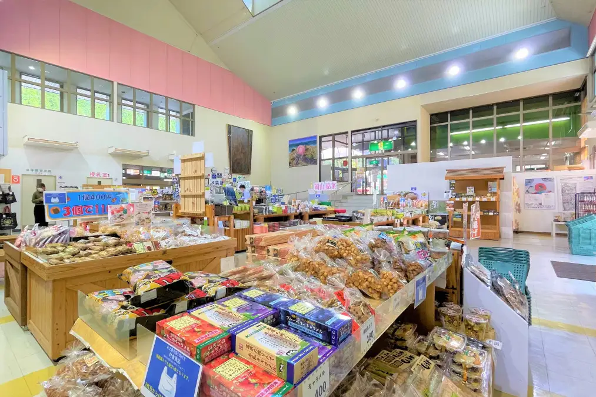
Stay
100年の森のホテル 栞
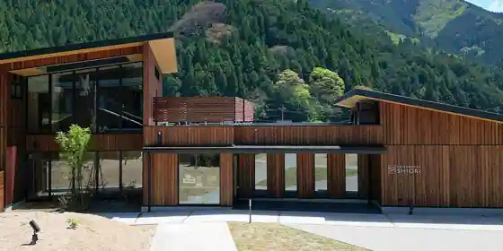
100 Nen No Mori No Hotel Shiori
おさじの宿 堂屋敷
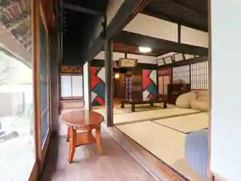
Osajino Yado Dooku Shiki
Inn in Kageishi, Nishiawakura with a renovated traditional house.
Dining
道の駅レストセンター あわくらんど レストラン
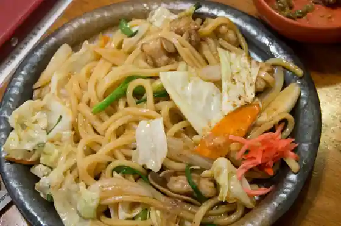
Michi No Eki Resuto Center Awakurando Restaurant
にしあわくら小林菓子店
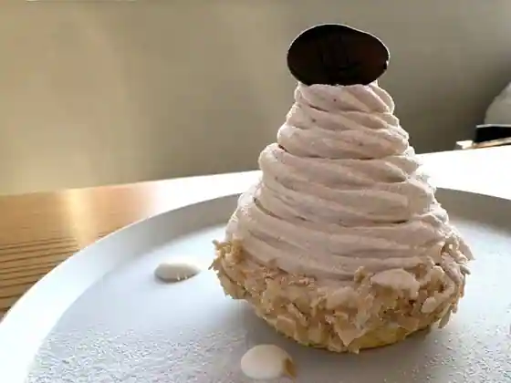
Nishiawakura Kobayashi Kashi
ミルクスタンド モリノカフェ
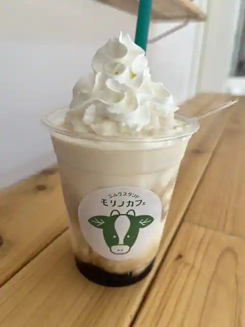
Mirukusutando Morino Cafe
あわくら温泉元湯
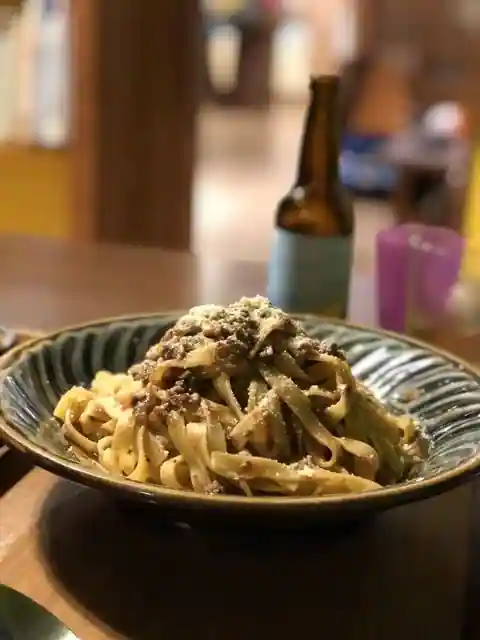
Awakura Onsen Motoyu
みそ汁や 一汁一菜
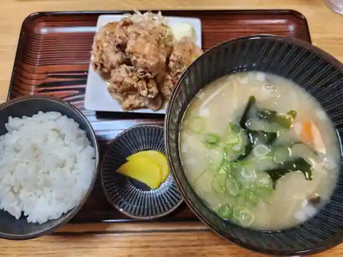
Miso Shiru Ya Ichi Shiru Ichi Na
ユゴー・エ・レオ
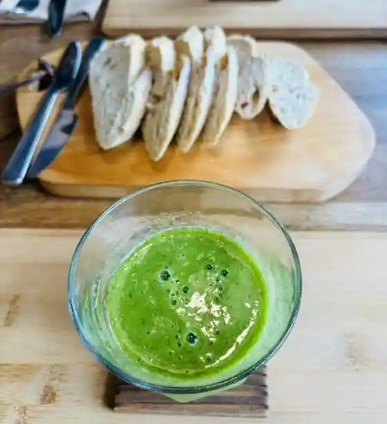
Yugo E Reo
国民宿舎あわくら荘
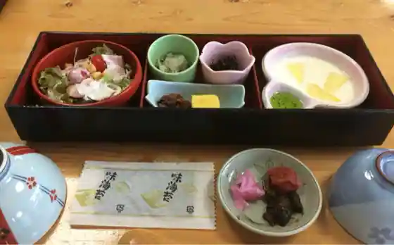
Kokuminshukusha Awakura So
ログ M
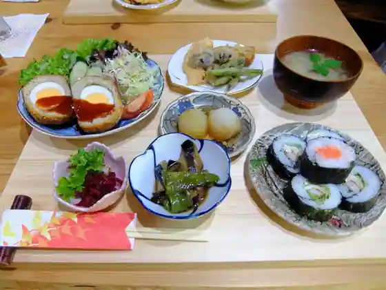
Rogu M
菓子や ミー
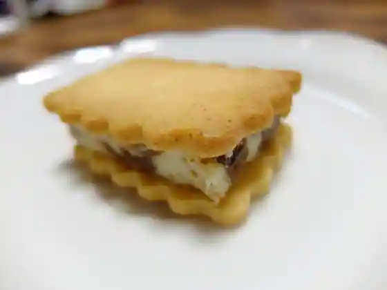
Kashi Ya Mi
くつろぎ処くんちでん
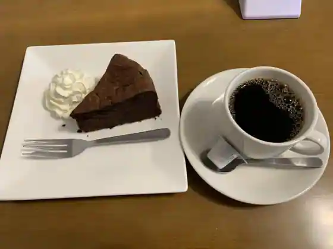
Kutsurogi Tokoro Kunchiden
酒うらら
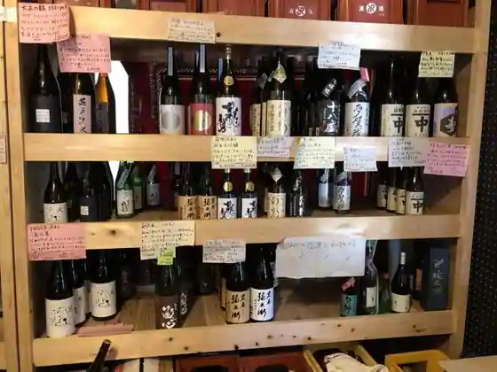
Sake Urara
大愚
Taigu
ほるやん食堂
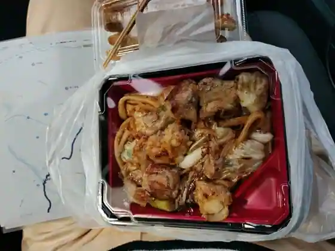
Horuyan Shokudo
おざきや
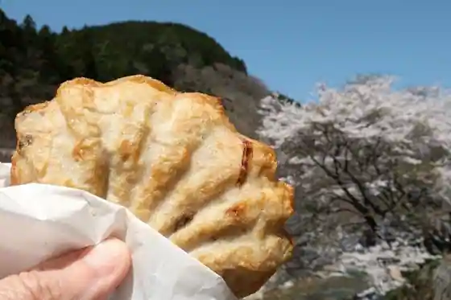
Ozakiya